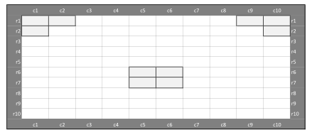

Lecture XI - Arena Seat Planning under Distancing Rules
Applied Optimization with Julia
Introduction
Covid-19 Pandemic
Challenges for Live Events
- Overall number of participants at events was restricted
- Certain spacing between participants had to be ensured
- Larger events required vaccination certificates for all
. . .
Question: What are the main issues for the organizers?
Main Difficulties
- Organization of larger events is costly
- Even without a pandemic a financial risk
- Administrative Burden for vaccination certificates
- Reduced capacity is a loss of revenue
- Implementing and enforcing distancing rules
- Managing different priorities of groups
Idea: Optimizing Seating Plans
Background
- Applications: sport arenas, concert halls, movie theaters, lecture halls, etc.
- People from the same group are seated together
- Venues have specific seating, season tickets, VIPs, etc.
. . .
Optimizing seating plans can help to maximize revenue while ensuring distancing rules and other constraints are met.
Problem Structure
Example: Two different plans


Different Approaches Possible
- Operational
- Tactical
- Strategic
. . .
Question: What are these approaches in general and how do they relate to arena seating?
Operational
- Short-term, day-to-day decisions
- Focused on immediate execution
. . .
Question: What is an example for this approach?
. . .
- Given tomorrow’s demand of differently sized groups
- Score groups (importance, sponsors, VIP, season ticket,…)
- Assigning specific seats for tomorrow’s event
Tactical
- Medium-term planning (weeks to months)
- Bridges operational and strategic levels
. . .
Question: What is an example for this approach?
. . .
- Given distribution of expected demand for groups
- Score groups (importance, sponsors, VIP, season ticket,…)
- Plan seating arrangements for an upcoming season
Strategic
- Long-term planning (months to years)
- Focus on overall goals and policies
. . .
Question: What is an example for this approach?
. . .
- Designing flexible seating layouts that work for scenarios
- Maximize the overall space utilization
- Sell the resulting maximized seating pattern on market
Main Question
Task: Fill the seating area given distancing regulations and venue-specific constraints.
Question: Any ideas on how to approach this?
Knapsack
Knapsack Problem

- Standard model in Operations Research
- Select items from a pool under capacity constraints
Knapsack Problem in 2D

- Now, Items block space in 2D, as illustrated here
Adaption to Seating
- Horizontal dimension to place groups of participants
- Vertical dimension to ensure enough spacing between rows
- Maximize the “value” of the allocated groups
- Value can be the number of seats or a score
. . .
Idea behind the model was developed by Dr. Matthes Koch.
Hands-on Exercise
Task: Allocate as many high-value groups as possible.

Available Groups
| Grouptype | Req. Seats | Score | Available | Allocated | Value |
|---|---|---|---|---|---|
| a | 1 | 1 | 3 | ||
| b | 2 | 2 | 2 | ||
| c | 2 | 4 | 3 | ||
| d | 4 | 4 | 5 | ||
| e | 4 | 5 | 2 | ||
| f | 6 | 6 | 1 | ||
| g | 6 | 12 | 1 | ||
| Total |
Seating Constraints
- 1 empty seat between groups
- 1 empty seat front-to-back
- 1 empty seat diagonally
- Only 2 groups per row are allowed
- Grey seats represent obstacles
. . .
You have 5 minutes to find a solution.
Question: What is your total score?
Model Formulation
Sets?
Question: What could be the sets?
. . .
- \(\mathcal{G}\) - Set of groups, indexed by \(g\)
- \(\mathcal{R}\) - Set of rows, indexed by \(r\)
- \(\mathcal{C}\) - Set of columns, indexed by \(c\)
- \(\mathcal{C}_{g,r}\) - Available seats of row \(r\) for group \(g\), indexed by \(c\)
. . .
\(\mathcal{C}_r\) ensures that we only consider unblocked seats in each row.
Parameters?
Question: What could be possible parameters?
. . .
- \(p_r\) - Maximal number of groups allowed in one row \(r\)
- \(d_g\) - Required seats of a group \(g\) in a row
- \(h\) - Safety distance between groups sitting next to each other
- \(b\) - Vertical safety distance between groups
- \(v_g\) - Value of an allocation of the group \(g\)
Variables and Objective
Decision Variable?
Maximize the group values by filling the seating area given distancing regulations between groups and venue-specific constraints.
Each group is represented by one binary variable. We don’t need to block each seat explicitly with a binary variable!
Decision Variable
- All the groups, \(g \in \mathcal{G}\)
- All the rows, \(r \in \mathcal{R}\)
- All the columns, \(c \in \mathcal{C}\)
Question: What could be our decision variable?
. . .
- \(X_{g,r,c}\) - 1, if first left seat of \(g\) is assigned to \(r\) in \(c\), else 0
Objective Function?
Maximize the group values by filling the seating area given distancing regulations between groups and venue-specific constraints.
. . .
Question: How again are groups allocated?
. . .
- By the allocation of the first left seat of a group to a row and column in the seating area
Objective Function
- \(v_g\) - Value of an allocation of the group \(g\)
- \(X_{g,r,c}\) - 1, if first left seat of \(g\) is assigned to \(r\) in \(c\), else 0
. . .
Question: What could be our objective function?
. . .
\[ \text{maximize} \quad \sum_{g \in \mathcal{G}} \sum_{r \in \mathcal{R}} \sum_{c\in \mathcal{C}_{g,r}} v_g \times X_{g,r,c} \]
Constraints
Necessary Constraints
Question: What constraints do we need?
. . .
- Assign each group only once
- Restrict the number of groups in each row
- Ensure the horizontal social distance
- Keep the vertical social distance
Assign Each Group Only Once?
Ensure that each group is allocated only once in the entire seating area.
. . .
- \(X_{g,r,c}\) - 1, if first left seat of \(g\) is assigned to \(r\) in \(c\), else 0
- \(\mathcal{G}\) - Set of groups, indexed by \(g\)
- \(\mathcal{R}\) - Set of rows, indexed by \(r\)
- \(\mathcal{C}_{g,r}\) - Set of columns of row \(r\) for group \(g\), indexed by \(c\)
Assign Each Group Only Once
Question: What could be the constraint?
. . .
\[ \sum_{r \in \mathcal{R}} \sum_{c \in \mathcal{C}_{g,r}} X_{g,r,c} \leq 1 \quad \forall g \in \mathcal{G} \]
. . .
This “set packing” constraint ensures that a group is only assigned once.
Restrict Groups Per Row?
Ensure that the number of groups in each row does not exceed the maximum allowed number of groups.
. . .
- \(p_r\) - Maximal number of groups allowed in one row \(r\)
- \(X_{g,r,c}\) - 1, if first left seat of \(g\) is assigned to \(r\) in \(c\), else 0
Restrict Groups Per Row
Question: What could be the constraint?
. . .
\[ \sum_{g\in \mathcal{G}}\sum_{c\in \mathcal{C}_{g,r}} X_{g,r,c} \leq p_{r} \quad r \in \mathcal{R} \]
. . .
We want to place as many highly scoring groups as possible, but people need to move to buy drinks or use restroom. Depending on the venue, they should not cross other groups in the same row.
Model Characteristics
Characteristics
Questions: On model characteristics
- Is the model formulation linear/ non-linear?
- What kind of variable domains do we have?
Model Assumptions
Questions: On model assumptions
- What assumptions have we made?
- Is our approach strategic or tactical/operational?
- Have we considered all social distancing constraints?
- What about aisle seats?
- Can you think of any other real-world constraints?
Implementation and Impact
Arena Seating Optimization
Case study VfL Osnabrück
- Relegation Return Match in 2021
- 241 additional seats allocated (+12 percent)
- Compliance with all distancing requirements
- Approval from authorities
. . .
Estimated additional revenue of 8,435 EUR for one match.
Seating Plan

Conclusion
Optimization Benefits
- Optimization enables rapid generation and evaluation
- We can easily adapt to various distancing requirements:
- Horizontal and vertical spacing between groups
- Groups per row limits
- Aisle seat restrictions
- Group size constraints
- Multi-row group allocation
Wrap Up
- Revenue optimization through applied optimization
- Increased participant capacity vs basic approaches
- Flexible adaptation to various distancing requirements
- Can be adapted easily to any seating requirements
. . .
We now have covered the arena seating problem based on a real-world application and are ready to start solving the corresponding tasks in the upcoming tutorial.
Literature
Literature I
For more interesting literature to learn more about Julia, take a look at the literature list of this course.
Social Distance Implementation
Central Idea
. . .
Assume one seat between groups must be kept empty. If one group takes seat 8, it uses seats 8 and 9. We thus cannot allocate another group of size 2 to seats 6, 7 or 8.
Horizontal Social Distance?
Question: Any ideas how to implement this?
. . .
Ensure that the horizontal social distance is maintained between groups.
. . .
Horizontal Social Distance
As the constraint is based on a rather complex set, you don’t have to find it by yourself.
. . .
\[\sum_{g \in \mathcal{G}} \sum_{\tilde{c} \in \tilde{\mathcal{C}}_{c,g}} X_{g,r,\tilde{c}} \leq 1 \quad \forall r\in \mathcal{R}, c\in \mathcal{C}\]
. . .
At first glance, this constraint looks rather easy, but it is not - it is based on the set \(\mathcal{C}_{c,g}\) not defined yet in the lecture.
The Social Distancing Set
\[\tilde{\mathcal{C}}_{c,g} = \{\tilde{c}\in \mathcal{C}| c - d_g + 1 - h \leq \tilde{c} \leq c \}\]
. . .
. . .
Question: Can anybody explain the set?
Example: Two Groups
\[\underbrace{X_{1,2,\textbf{6}}+X_{1,2,\textbf{7}}+X_{1,2,\textbf{8}}}_{g=1} + \underbrace{X_{2,2,\textbf{6}}+X_{2,2,\textbf{7}}+X_{2,2,\textbf{8}}}_{g=2} \leq 1 \quad (r=2,c=8)\]
Example: Different Group Sizes
\[\underbrace{X_{1,2,\textbf{6}}+X_{1,2,\textbf{7}}+X_{1,2,\textbf{8}}}_{g=1} + \underbrace{X_{2,2,\textbf{5}}+X_{2,2,\textbf{6}}+X_{2,2,\textbf{7}}+X_{2,2,\textbf{8}}}_{g=2} \leq 1 \quad (r=2,c=8)\]
Example: Three Groups
\[ \underbrace{X_{1,2,\textbf{6}}+X_{1,2,\textbf{7}}+X_{1,2,\textbf{8}}}_{g=1} + \underbrace{X_{2,2,\textbf{6}}+X_{2,2,\textbf{7}}+X_{2,2,\textbf{8}}}_{g=2} + \underbrace{X_{3,2,\textbf{5}}+X_{3,2,\textbf{6}}+X_{3,2,\textbf{7}}+X_{3,2,\textbf{8}}}_{g=3} \leq 1 \quad (r=2,c=8) \]
Do you see
the pattern?
Vertical Social Distance?
Ensure that the vertical social distance is maintained between groups.
. . .
Vertical Social Distance
Question: What could be the constraint?
. . .
It is an extension of the horizontal social distance constraint we used before, but now we block a rectangular area instead of a single row.
. . .
\[ \sum_{g \in \mathcal{G}} \sum_{\tilde{r} \in \mathcal{R}_r} \sum_{\tilde{c} \in \tilde{\mathcal{C}}_{cg}} X_{g\tilde{r}\tilde{c}} \leq 1 \quad \forall r\in \mathcal{R}, c\in \mathcal{C} \]
Vertical Distance Set
Question: What could be the set?
. . .
\[ \tilde{\mathcal{R}}_{r} = \{\tilde{r}\in \mathcal{R}| r-b \leq \tilde{r} \leq r \} \]
. . .
Remember:
. . .
Let’s look at an example.
Example: Two Groups
Arena Seating Problem
\[ \text{maximize} \quad \sum_{g \in \mathcal{G}} \sum_{r \in \mathcal{R}} \sum_{c\in \mathcal{C}_r} v_g \times X_{g,r,c} \] subject to: \[ \begin{align*} & \sum_{r \in \mathcal{R}}\sum_{c \in \mathcal{C}_r} X_{g,r,c} \leq 1 && \forall g \in \mathcal{G} \\ & \sum_{g \in \mathcal{G}}\sum_{c\in \mathcal{C}_r} X_{g,r,c} \leq p_r && \forall r \in \mathcal{R} \\ & \sum_{g \in \mathcal{G}} \sum_{\tilde{r} \in \tilde{\mathcal{R}}_{r}} \sum_{\tilde{c} \in \tilde{\mathcal{C}}_{c,g}} X_{g,\tilde{r},\tilde{c}} \leq 1 && \forall r\in \mathcal{R}, c\in \mathcal{C} \\ & X_{g,r,c} \in \{0,1\} && \forall g \in \mathcal{G}, \forall r\in \mathcal{R}, c\in \mathcal{C}_r \end{align*} \]